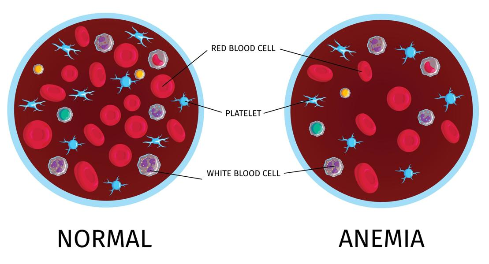
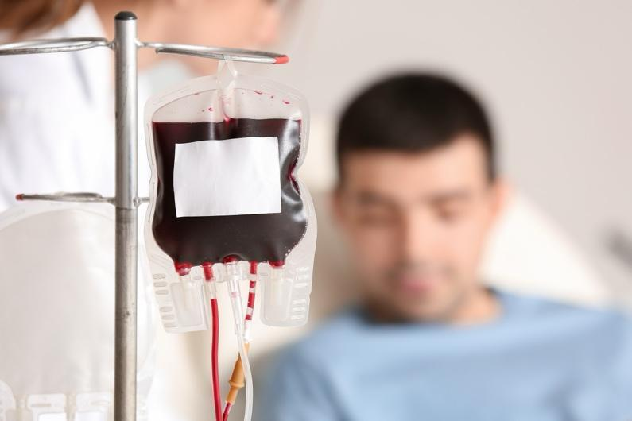

Anemia means you have fewer red blood cells than is normal. Red blood cells are made in your bone marrow, which is the soft part inside your bones. These cells carry oxygen from your lungs to the rest of your body.
When you have anemia, your body and brain may not get enough oxygen. This can make you feel weak, tired, or short of breath.

Anemia can happen during cancer for many reasons:
Some cancers, like leukemia and lymphoma, grow in the bone marrow and stop it from making enough healthy red blood cells.
Cancer treatments, such as chemotherapy and radiation, can damage the bone marrow. This slows down red blood cell production.
Tumors in the stomach, intestines, or other areas may cause bleeding. This can lower your red blood cells.
Cancer or its treatment may affect your appetite. You may find it hard to eat foods with the iron, vitamin B12, and folate needed to make red blood cells.
Kidney problems from cancer or its treatment can also lower red blood cell production.
You might notice:
Feeling very tired or weak
Pale skin, lips, or gums
Shortness of breath or fast breathing
Fast heartbeat or chest pain
Dizziness or feeling lightheaded
Swelling in your hands or feet
Headache or trouble thinking clearly
Your care team uses a blood test called a complete blood count, or CBC. This checks your red blood cell levels. They may do other tests to find out why you have anemia and how to treat it.
Treatment depends on your symptoms, how low your red blood cell levels are, and sometimes on the cause of your anemia.
You may not need treatment if you are tolerating the anemia, and it is not likely to get worse.
You may get a blood transfusion to increase your red blood cells quickly.
Some medicines can help. The most common is erythropoietin. It stimulates the bone marrow to make more red blood cells.
If you have low levels of iron, vitamin B12, or folate, your care team may give you supplements or suggest eating foods rich in these nutrients.
If you have bleeding, your care team will try to stop it.

You may not always be able to prevent anemia during cancer. These steps may help:
Try to eat foods high in iron, such as lean meats, beans, eggs, leafy green vegetables, and dried fruits.
Eat foods with vitamin B12 and folate, like eggs, dairy, and whole grains.
Follow your care team’s advice about medicines and diet.
If your anemia continues or gets worse, you may feel some or all of the symptoms described above. In most cases, these symptoms can be reduced or eliminated with transfusions or other treatments.
Call your care team if you have:
Tiredness or weakness that gets worse or does not improve
Dizziness or lightheadedness
Shortness of breath with activity
Fast or irregular heartbeat
Swelling in your hands or feet
Pale skin, lips, mouth, or nail beds
Headache or trouble thinking clearly
Unsteadiness when walking
Ringing in your ears
Trouble sleeping or concentrating
Get help right away if you have:
Bleeding that will not stop
Chest pain or pressure
Shortness of breath even when resting
New or worse confusion
Fainting or passing out
Severe dizziness or trouble walking
Thank you for trusting us with your care. We are here to support you and want you to feel your best. Contact us with any questions.
IF YOU HAVE A MEDICAL EMERGENCY, CALL 911 OR GO TO THE EMERGENCY ROOM.
The information presented is intended for general information and educational purposes. It is not intended to replace the advice of your health care provider. Contact your health care provider if you believe you have a health problem.
Last updated May 2025
© 2025 Mytonomy, Inc. All rights reserved.